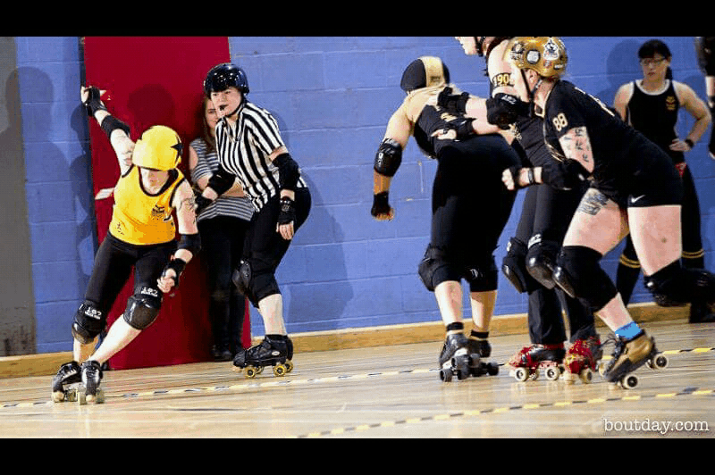

Auld Reekie take on two on 12th!
Sometimes it feels like you wait for a long time for a double header to come along, and then they all turn up at once. The 12th of March is one of those days, with both Auld Reekie Roller Girls and Mean City Roller Derby holding double headers at opposite sides of the Central Belt. This article will cover the first of these, with a follow up article coming on events in Glasgow.
In Edinburgh's Meadowbank Stadium, from 1pm, Auld Reekie will be playing two games in a row: their All-Star Reserves taking on Dundee Roller Girls' Silvery Tayzers first, followed by the All-Stars facing off against Newcastle Roller Girls' Canny Belters.
Dundee Roller Girls are fresh off a very convincing victory over Preston Roller Girls during the opening British Champs Tier 3 North fixture. FlatTrackStats sees them continuing the trend into this game a little closer to home, with a 76% projected probability of victory.
Silvery Tayzers' Co-Captain, Laura 'Milky' Liston told us: "We're really excited, it's been about three years since we've played ARRG. The Tayzers are hoping to channel a bit of the [Bonnie] Colliders' teamwork, positivity and calm for this one. We've got so many new skaters moving up through the league who are gelling so well, and forcing us all to up our game. We're feeling really ready for this game and this season."
Meanwhile, the All-Star Reserves themselves took an impressive European win in January over Dresden Roller Derby, and won't want to relinquish the momentum this has given them. We anticipate this being a very hard fought bout, with both teams pulling out all the stops.
Newcastle's Canny Belters are fresh from a significant win over Glasgow Roller Derby at the British Champs T1. They will be looking to solidify the ranking improvements this could bring, with a win over the East Coast's premier Scottish league as well. NRG's Head Coach, Kalamity James, is sure that the Belters can have a shot. "We're really looking forward to the game against ARRG. We're pretty sure it’s going to be the hardest game we’ve played up until this point, but we’ve been training really intensely and buoyed by our recent success against Glasgow we’re hoping we can give them a very good run for their money! We love having such a top class team so close to us, we can’t wait to travel up to Scotland on Saturday."
 Newcastle's Kalamity James was so happy about her laterals playing versus Glasgow last month that she made this gif to show them off... (Credit: Original images Dave McAleavy. Gif generation: giphy.com.)
On the other side, Auld Reekie's All-Stars will also be very intent on a win; the first game in their season, this could set the tone for the proceeding year. FlatTrackStats is on the Home team's side, predicting a 97% probability of their taking home the win. This reporter spotted many All-Stars skaters in the audience to see Newcastle play Glasgow, so we are sure that they will have been taking notes to ensure victory!
Both Auld Reekie Roller Girls and Newcastle Roller Girls will be playing over in the States later this year - ARRG at The Big O, and NRG at Beach Brawl - so early WFTDA ranking improvements will be significant to them in this context too.
Newcastle Roller Girls are raising money for their USA trip (their very first across the Atlantic) via a variety of means, but the easiest way to support them is via their GoFundMe.
Tickets are available for the double header online for just £5, or for £8 on the door. Under-14s are free, as always, and there are group ticket discounts available on prior request.
The projected running order of this double header is:
1pm - Doors Open.
1.15pm - First Bout (Dundee/All-Star Reserves) Starts
4pm - Second Bout (Newcastle/All-Stars) Starts
6.15pm - Event concludes.
The City Cafe Edinburgh is booked for the afterparty from 8pm.